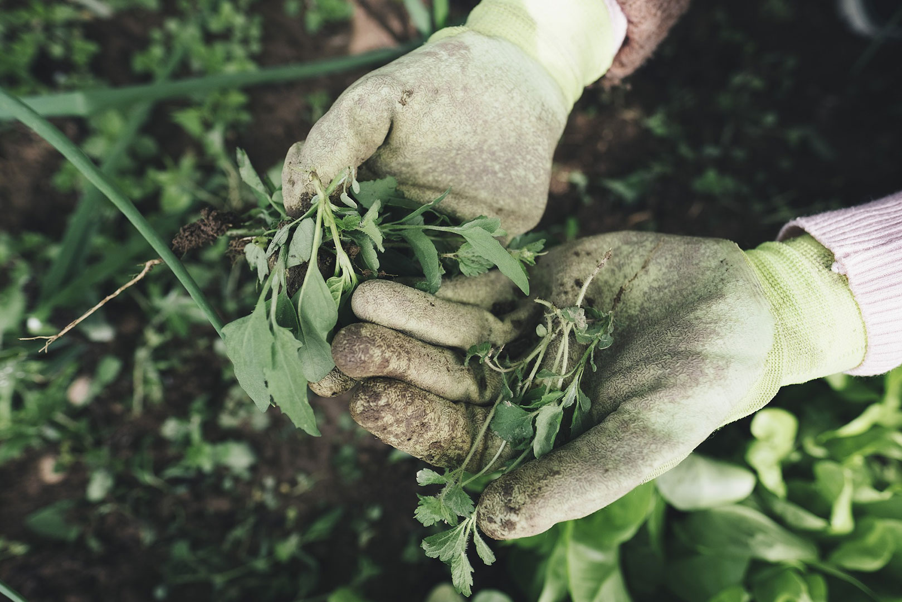

Why Gardening
My father grew up on a farm. As a child he had to work the land and take care of the animals. My father wanted to pass a little bit of that on to his family. We didn't live on a farm but he wanted to pass planting on to his family by having a garden. I have many memories with My father and sister planting crops and squishing my small hands in the mud. As I have gotten older I haven't really thought about it until a few years ago. I started by planting an herbs garden and my sister started growing crops in hear garden beds. I would ask my father for advice and my sister and I would share our growing adventures with each other.
Planting Indoors vs Outdoors
Planting indoors vs outdoors. Before you can plant a spring crop you have to wait for the last frost. While you wait you can plant seeds indoors in a prepared location to help protect the seeds from the weather. If you decide to do this you will have to harden the plants in small incements of time outside and then take them back in. Have to continue this until the plants can survive outside. If you would like to skip this step, can wait until the last frost is done and direct sew or buy plant.
Ending Comments
Gardening is a lot of work but it can be rewarding. Sometimes their is heart breaking when you find your hard work eatten by animals or insects before you can even get a bite. By paying attention to plants you begin to understand what they need by looking at them. Eating fresh ripe crops from your garden is the best. Happy planting!!